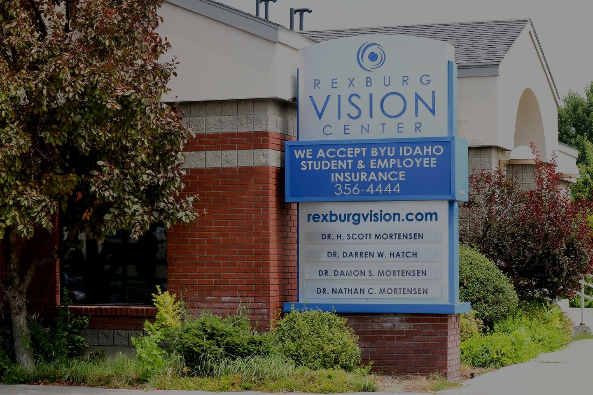

Optometry · Rexburg, Idaho
Six decades of
clear focus on the Upper Valley.
Rexburg Vision Center has provided eye care to this town since 1963 — long enough to have examined the parents of the patients we see today. Comprehensive exams, prescription eyewear, and contact lens fittings, from a practice that isn't going anywhere.

On the sign since 1963
The same monument sign at 49 E 1st South that generations of Rexburg patients have driven past on their way in.
What we do
Eye care, built around the exam room — not the retail floor.
The essentials of good vision care, handled in person by a practice that has been doing this in Rexburg since before interstate highways reached the valley.
Comprehensive eye exams
Full vision and eye-health evaluations for adults and kids, from a team that keeps records going back generations in this community.
Prescription eyewear
Frames and lenses fitted on-site, from your exam to a pair you'll actually wear every day.
Contact lens fittings
Fitted and checked in person, with follow-up care if something isn't sitting right.
Ongoing vision health
A local point of contact for changes in your vision over time — not a one-visit relationship.
A Rexburg fixture
Open for business since before Rexburg had its first stoplight.
Rexburg Vision Center has been examining eyes and fitting glasses in this town for more than sixty years. That's not a marketing line — it's a plain fact worth building a website around, because it's the kind of longevity almost no local business can claim.
Rexburg Vision Center opens its doors in Rexburg, Idaho.
Six decades of continuous eye care from the same Upper Valley address.
Still an independent, local practice at 49 E 1st South — not a chain, not a franchise.
Why Rexburg Vision Center
The advantage of not being new.
Sixty years, one town
Founded in 1963, still serving Rexburg — a track record most eye-care providers in the valley simply don't have.
A real local address
49 E 1st South, in the heart of Rexburg — easy to find, easy to walk to, and easy to reach by phone.
Locally owned, still independent
In an era of clinic chains and big-box optical counters, Rexburg Vision Center remains an independently owned practice in the town where it started.
Right in town
Downtown Rexburg, easy to find.
49 E 1st South sits in the middle of Rexburg — call ahead to confirm current hours before you stop by.
Ready when you are
See clearly. Call the office.
Reach Rexburg Vision Center directly — a locally rooted practice, one phone call away.